Свойства flex-элементов
order
Свойство order управляет порядком, в котором дочерние элементы появляются внутри flex-контейнера. По умолчанию они располагаются в том порядке, как добавлены исходно во flex-контейнер.
Значения
<целое число>
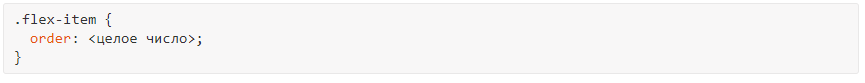
flex-элементы могут быть переупорядочены с помощью этого простого свойства без изменения кода HTML.
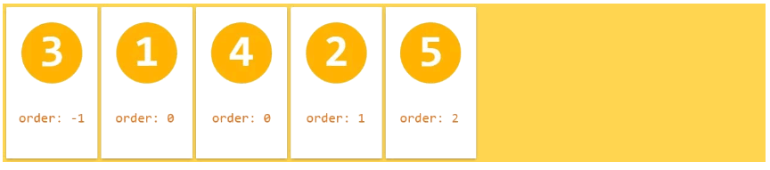
Значение по умолчанию: 0
flex-grow
Это свойство задаёт коэффициент роста, который определяет, насколько flex-элемент будет увеличиваться относительно остальных flex-элементов во flex-контейнере, при распределении положительного свободного пространства.
Значения
<число>
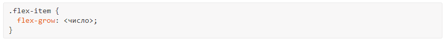
Если все flex-элементы имеют одинаковое значение flex-grow, то все элементы будут иметь и одинаковый размер в контейнере.
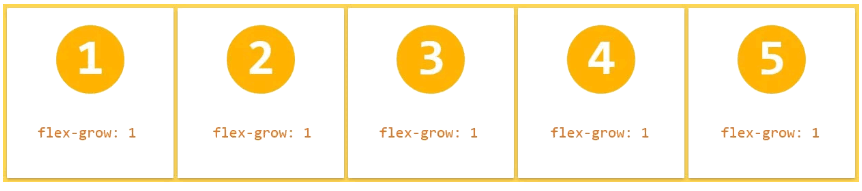
Второй flex-элемент занимает больше места относительно размера других flex-элементов.
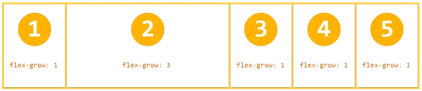
Значение по умолчанию: 0
Отрицательные числа недопустимы.
flex-shrink
flex-shrink задаёт коэффициент сжатия, который определяет, насколько flex-элемент будет сжиматься относительно остальных flex-элементов во flex-контейнере, при распределении отрицательного свободного пространства.
Значения
<число>
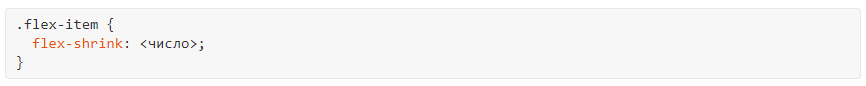
По умолчанию все flex-элементы могут быть сжаты, но если мы установим значение flex-shrink нулевым (без сжатия), то элементы сохраняют исходный размер.
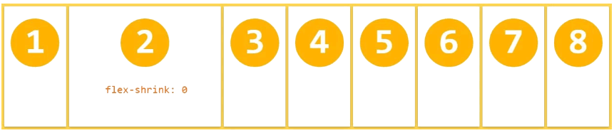
Значение по умолчанию: 1
Отрицательные числа недопустимы.
flex-basis
Это свойство принимает те же значения, что и свойства width и height, и определяет начальный основной размер flex-элемента, до того, как свободное пространство распределяется в соответствии с коэффициентами.
Значения
auto
|<ширина>
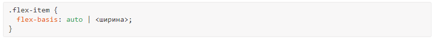
flex-basis указан для четвёртого flex-элемента и диктует его начальный размер.
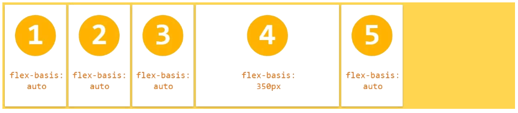
Значение по умолчанию: auto
flex
Это свойство является сокращением для свойств flex-grow, flex-shrink и flex-basis. Кроме других значений также можно установить auto (1 1 auto) и none (0 0 auto).
Значения
Значение по умолчанию: 0 1 auto
W3C рекомендует использовать сокращённое свойство flex, вместо отдельных свойств, поскольку flex правильно сбрасывает любые неуказанные компоненты для типового использования.
align-self
Свойство align-self позволяет переопределить выравнивание по умолчанию (или значение, указанное через align-items) для отдельных flex-элементов. Для понимания доступных значений обратитесь к описанию align-items для flex-контейнера.
Значения
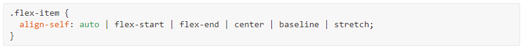
Для третьего и четвёртого flex-элементов переопределено выравнивание через свойство align-self.
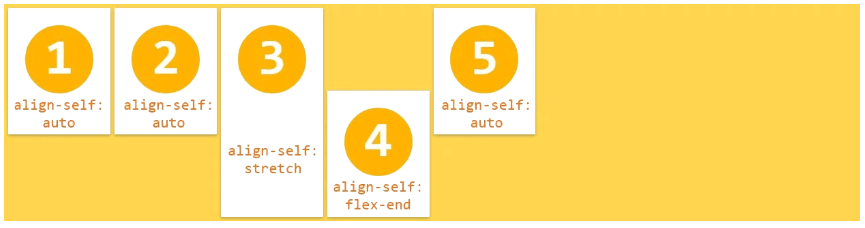
Значение по умолчанию: auto
Значение auto для align-self вычисляется как значение align-items родительского элемента или stretch, если родитель отсутствует.
Замечания
Свойства float, clear и vertical-align не оказывают влияния на flex-элемент и не вырывают его из потока.